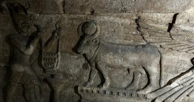
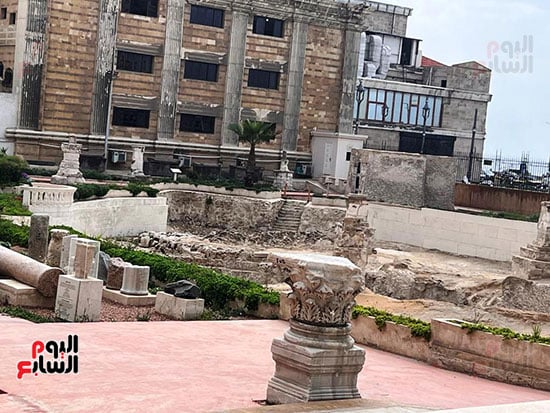
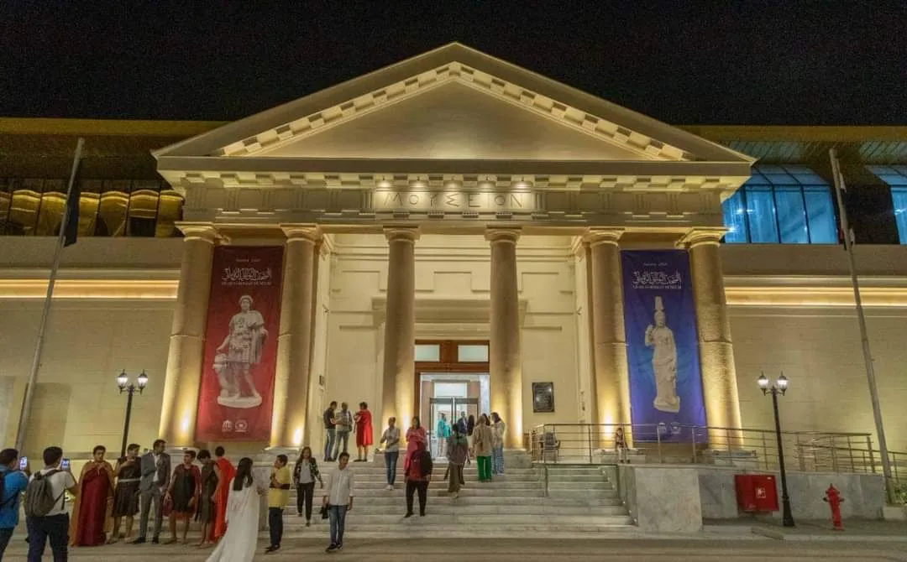

أفضل أماكن سياحية في الإسكندرية
الاسكندرية هي العاصمة الثانية لمصر، وتتمتع بعدد من المقومات الترفيهية والسياحية فى كافة فصول السنة، وبخلاف تصدر السياحة الشاطئية للمناطق السياحية والترفيهية خلال فصل الصيف، فهناك أيضا عشاق الإسكندرية خلال فصل الشتاء، حيث تتمتع الإسكندرية بمجموعة من الحدائق والمتنزهات والمناطق الأثرية والمتاحف، بالإضافة إلى مكتبة الإسكندرية هذا الصرح الثقافى الكبير
مكتبة الإسكندرية

تعد مكتبة الإسكندرية أكبر صرح ثقافى فى الشرق الاوسط ، وتضم المكتبة حاليا ، ما يقرب من 2 مليون كتاب ، بمختلف لغات العالم وتتمتع مكتبة الإسكندرية بمجموعة متاحف حيث تضم 3 متاحف كبرى للاثار و المخطوطات و الساداتمتحف الآثار داخل المكتبة يفتح يوميا ما عدا الجمعة والسبت من الساعة 9 صباحا وحتى 3.30 عصرا ويعد متحف الآثار بمكتبة الإسكندرية ، أحد أهم متاحف الإسكندرية ومتحف الآثار هو أحد المتاحف القليلة في العالم التي تعرض قطعًا فنية تم اكتشافها في نفس مكان عرضها وتم افتتاح المتحف رسميًّا في 16أكتوبر 2002, وقد اختيرت مقتنياته بعناية لتعكس تاريخ مصر الثري والمتعدد الثقافات والممتد عبر الثقافات الفرعونية واليونانية والرومانية، والقبطية والإسلامية، مع التركيز على الإسكندرية والمرحلة الهيلينستية. ويحتوي المتحف على 1133 قطعة معروضة. متحف المخطوطات يقع داخل المكتبة، ويفتح يوميا ما عدا الجمعة والسبت من الساعة 9 صباحا وحتى 3.30 عصرا ويعد متحف المخطوطات من أهم المتاحف الدائمة داخل مكتبة الإسكندرية، والذى يتبع قطاع التواصل الثقافى بالمكتبة، وترجع أهمية هذا المتحف إلى ما يقتنيه من مخطوطات وكتب يرجع تاريخها إلى ألف عام حيث يحتوى المتحف على 120 مخطوطة و كتاب تراثى قديم وشهد المتحف زيارة العديد من رؤساء دول العالم مؤخرا، نظرا للأهمية التاريخية والتراثية التى توجد داخل المتحف متحف السادات يوجد داخل القبة السماوية، ويفتح يوميا ما عدا الجمعة والسبت من الساعة 9 صباحا وحتى 3.30 عصرا، والدخول مجانا. ويضم كافة مقتنيات الزعيم الراحل محمد أنور السادات المهداة الى المكتبة من السيدة جيهان السادات ، بالإضافة الى بانوراما العرض لانتصارات أكتوبر ، وأبرز المقتنيات البدلة التى استشد بها الزعيم الراحل و باقى عليها آثار الدماء بالإضافة الى الى مجموعة من المتاحف الأخرى و المعارض المتخصصة ، كما تضم المكتبة 6 مكتبات متخصصة ابرزها مكتبة الخرائط و مكتبة النشئ والطفل و مكتبة المكفوفين Bibalex.org :استكشف المكتبة من خلال هذا الرابط
قلعة قايتباي

منطقة قلعة قايتباى والمتاحف المحيطة بها تعد قلعة قايتباى، من أشهر المناطق الأثرية بالإسكندرية، وهى تقع بمنطقة بحرى، وشيدت فى مكان منارة الإسكندرية القديمة التى تهدمت سنة 702هـ أثر الزلزال المدمر الذى حدث فى عهد السلطان الناصر محمد بن قلاوون، بدأ السلطان الأشرف أبو النصر قايتباي بناء هذه القلعة فى سنة 882 هـ وانتهى من بنائها سنة 884 هـ. وإلى جانب التمتع بالتنزه داخل أروقة قلعة قايتباى الأثرية ، هناك متعة أخرى بساحة قلعة قايتباي، حيث التنزه فى رحلة بحرية داخل البحر تمتد من بحرى و حتى مكتبة الإسكندرية ،أو مشاهدة أغرب الأحياء المائية و الكائنات البحرية سواء الحية أو المحنطة داخل المتاحف المحيطة بالقلعة ،حيث يعد متحف الأحياء المائية بالإسكندرية هو المتحف الوحيد الذى يحتوى على أحياء مائية حية فى المحافظة ، وهو متحف صغير يضم عدة أنواع من أسماك وحيوانات البحرين المتوسط والأحمر كما يضم أنواعا أخرى تعيش في المياه العذبة كالنيل والأمازون ، بما يجعله معرض ترفيهى و تثقيفي و علمى فى نفس الوقت متحف المحنطات يوجد داخل أروقة القلعة الخارجية ، ويوجد به مجموعة نادرة من الكائنات البحرية المحنطة ، أشهرها هيكل عظمى لتمساح عملاق عمره 100 عام ،و هيكل عظمى لعروسة البحر الحقيقة ،مع مجموعة حفريات اكتشفت فى عصور مختلفة. مرسى اليخوت يوجد بجوار قلعة قايتباى بمنطقة بحرى و هناك تستطيع أن تتمتع برحلة بحرية ممتعة تنطلق من منطقة بحرى و تصل الى مكتبة الإسكندرية مع ممارسة هواية الصيد .
متحف المجوهرات الملكية

يعد متحف المجوهرات من ابرز المتاحف المتخصصة في الأسكندرية ، و يقع متحف المجوهرات بالاسكندرية ، فى منطقة جليم شرقا ، ولا يوجد له مثيل فى أى محافظة أخرى ، حيث يحتوي المتحف على أكثر من 1064 قطعة مجوهرات يتم عرضها داخل قصر النبيلة فاطمة حيدر فاضل إحدى نبيلات الاسرة المالكة
-
يضم المتحف مجموعة كبيرة من المجوهرات والتحف الذهبية ومنها تحف نادرة بدءا من عصر محمد علي باشا حتي فاروق الأول
- علبة نشوق بيضاوية الشكل من الذهب ومرصعة بالماس ويتوسط الغطاء إسم "محمد على" ، مقلمة من حجر اللازورد مثبت عليها من الخلف نموذج لكوبرى قصر النيل من الذهب
- تاج من البلاتين تاج من البلاتين المرصع بـ2159 ماسة ومجموعة من حبات اللؤلؤ كان يخص الأميرةشويكار الزوجة الأولى للملك فؤاد
- شخشيخة من البلاتين مطلية بالمينا البرتقالى بداخلها حبات صغيرة من الذهب واليد من اليشب
- طاقم شاي من الذهب مكون من 13 قطعه محلى بزخارف نباتية وعلى كل قطعه الحرفان الأولان من اسم الملك فاروق والملكة فريدة يعلوها التاج الملكى
أبرز المقتنيات
متحف الإسكندرية القومي

يعد متحف الإسكندرية القومي من أكبر وأهم المتاحف بمحافظة الإسكندرية، و هو يقع وسط الاسكندرية بشارع فؤاد ، وتأتى أهمية المتحف إلى أنه يحتوى على قطع أثرية هامة فمن مختلف العصور (الفرعوني واليونانى الرومانى والقبطى والاسلامى)، حيث يحتوي المتحف على 1330 قطعة أثرية تصور حضارة مصر وثقافتها وفنونها وصناعتها خلال العصور المختلفة ووحدة التاريخ والشخصية المصرية، كما تصور المعروضات كافة ما طرأ على مراحل تاريخ مصر من أحداث تاريخية قومية
المناطق الأثرية
مقبرة كوم الشقافة يرجع تاريخها الى القرن الثانى الميلادى ، وتعتبر الوحيدة من نوعها فى العالم من حيث التصميم والنقوش نظرا لامتزاج الزخرفة المصرية واليونانية والرومانية و المقبرة ذات أربع طبقات، وكان لها طبقة فوق الأرض اندثرت مع الزمن، أما السلم الحلزوني فيدور حول بئر أسطوانية محفورة في الصخر قطرها 6 م ويصل عمقها إلى 10 أمتار، والسلم مبني من كتل حجرية مربعة، شُكلت فيها نوافذ مستديرة من أعلى تعتبر الواجهة، أما المدخل فعبارة عن مكان صغير مغطى بقبو عند نهاية اللفة الثالثة للسلم، على جانبيه فجوتان متساويتان أشبه بالمحراب. جبانة الشاطبي هي أقدم مقابر الإسكندرية، وأقدم مواقع الآثار في الإسكندرية، حيث شيدت عام 332 ق.م ،ويرجع تاريخها للعصر الهلنستي وتتزامن مع تاريخ إنشاء مدينة الإسكندرية بعد قدوم الإسكندر وقراره بإنشاء المدينة، وتولى بطليموس الأول حكم مصر وقرر أن يتخذ من هذه المدينة عاصمة لمصر، وتم بناء الإسكندرية في ذلك الوقت، واستمرت الإسكندرية 1000 عام عاصمة لمصر في ظل حكم البطالمة والرومان من بعدهم، وهذه المقبرة أول مقبرة تنحت لدفن الجيل الأول من سكان الاسكندرية، ممن ماتو في وقت بناء المدينة.
المتحف الرومانى
تم افتتاح المتحف اليونانى الرومانى أكتوبر 2023،والذى يعد من أكبر متاحف الإسكندرية ، ويضم المتحف نحو 10 ألاف قطعة أثرية تعود الى العصر اليونانى الرومانى ، ليصبح أكبر متحف متخصص فى تلك الحقبة الزمنية . والمتحف مفتوح يوميا من 9 صباحا وحتى 5 مساءا، على أن يغلق باب التذاكر الساعة 4.30 عصرا، مع إتاحة استخدام كاميرا المحمول مجانا.